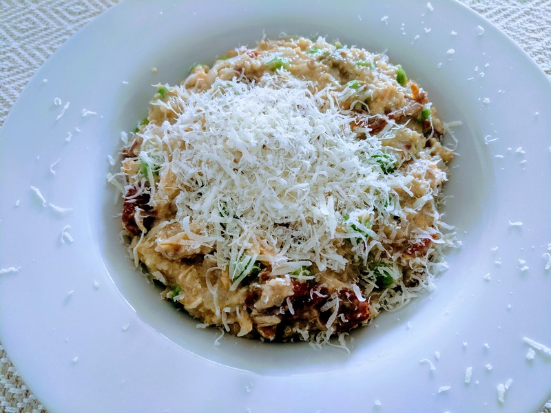

Tenhle famózní recept mám opět z blogu My cooking diary. Objevila jsem ho teprve teď během léta, ale už se stačil zařadit mezi mé stálice, které točím prakticky každý týden, když nemám čas moc vyvařovat. Geniální na něm totiž je, že je hotový opravdu během chviličky, ale přitom to je plnohodnotné, syté a zdravé jídlo. Win-win :-)
1 malá šalotka
40 g (jemně mletých) ovesných vloček
250 ml zeleninového vývaru
25 g strouhaného parmazánu
40 g mraženého hrášku
5 středních sušených rajčat naložených v oleji
1 vejce ( já někdy nahrazuju kousky pečeného lososa)
čerstvá pažitka
olivový olej
sůl a čerstvě mletý pepř
Uvedené suroviny jsou na jednu porci, takže já vždycky vše násobím dvěma… Na pánvi rozpálíme olej a opečeme na něm najemno nakrájenou šalotku. Vsypeme ovesné vločky a zalijeme vývarem. Jakmile se vývar vstřebá do vloček, přidáme hrášek, nakrájená sušená rajčata a většinu parmazánu (trochu můžeme nechat na ozdobení). Zde přichází na řadu můj tuning. Jeden den v týdnu zpravidla obědváme lososa. Pokud mám zrovna z předchozího dne nějaké přebytky, nakrájím maso na kousky a vmíchám do rizota. Určitě tento upgrade také vyzkoušejte ;-)! Pak už jen chviličku povaříme, dochutíme solí a pepřem a můžeme podávat. Pokud lososa nemám, servíruju s volským okem.
